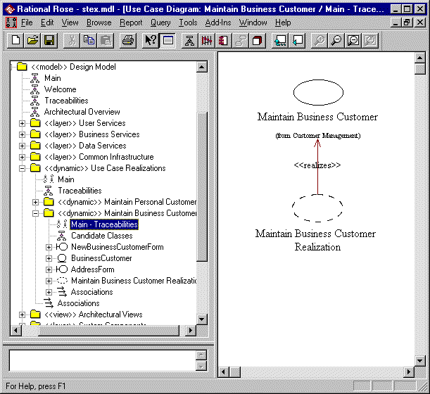

Standards: <<dynamic>> Package
TopicsIntroduction
|
| Diagram | Purpose | Use | Comment |
| Main | A class diagram showing the structure of the package | Optional | Only required for complex packages that
contain other packages. This diagram can often be combined with the Traceabilities diagram. |
| Traceabilities | A class diagram showing the traceability of the model elements owned by the package | Mandatory | A dynamic package should be the realization of something else defined in this, or another, model |
| Dynamic Views | A set of interaction diagrams. These diagrams should be given a meaningful name. | Optional | Dynamic packages will usually contain use case realizations and so will usually not directly contain any interaction diagrams |
| Static Views | A set of class diagrams showing any classes
currently declared to the package (and their internal and external relationships) or any
static views that aid in the understanding of the dynamic model. These diagrams should be given a meaningful name |
Optional | Dynamic packages may have classes and other structural model elements temporarily declared to them. These represent suggestions (candidate classes) to be absorbed into the static model at a later date. |
| Welcome | A class diagram presenting the purpose of the package. | Optional | A diagram presenting a friendly introduction to the package. |
Constraints 
<<dynamic>> packages should only own class definitions temporarily. These should be moved into the static model once they are accepted into the architecture of the system.
Examples
Typically <<dynamic>> packages will contain use case realizations.
Note: The Maintain Business Customer package currently owns a set of classes created for the realization – these are candidate classes awaiting their correct architectural packaging. When they are accepted into the architecture they will be removed from the package and relocated into the static object model.
